Spływ Dunajcem
- dla kogo to atrakcja?

Szukasz sprawdzonego organizatora spływów po Dunajcu?
Spływ Dunajcem to jedno z najpiękniejszych doświadczeń, jakie można przeżyć w sercu Pienin.
Niezależnie od tego, czy podróżujesz z psem, dzieckiem, osobą niepełnosprawną, czy z dużą grupą, nasza oferta dostosowana jest do różnych potrzeb i oczekiwań.
W każdej z tych kategorii zapewniamy wygodę, bezpieczeństwo i niezapomniane wspomnienia. Przekonaj się, jak spływ Dunajcem może stać się idealną atrakcją dla każdego – od małych dzieci po seniorów i zwierzęta!
Poznaj atrakcje, które czekają na Ciebie podczas spływu Dunajcem.

Jak wygląda spływ Dunajcem
Malowniczy przełom Dunajca to jedno z najbardziej spektakularnych miejsc w Polsce, a jego pokonanie wodą to wyjątkowe doświadczenie.
Jak wygląda spływ Dunajcem
Kościół w Dębnie – gotycka perła drewnianej architektury i skarb UNESCO
Kościół w Dębnie to jedno z tych miejsc, które pozwalają doświadczyć historii niemal wszystkimi zmysłami. Zachowany w niezmienionej formie od XV wieku.
Kościół w Dębnie – gotycka perła drewnianej architektury i skarb UNESCO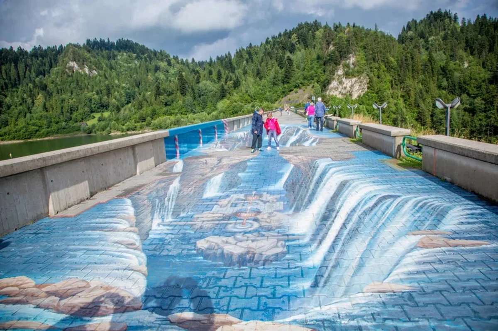
Zapora w Niedzicy – historia, widoki i atrakcje wokół Jeziora Czorsztyńskiego
To miejsce, które łączy piękno krajobrazu z historią i nowoczesnością. Dzięki licznym atrakcjom w pobliżu, wspaniałym widokom i możliwości spaceru po koronie zapory, przyciąga turystów przez cały sezon.
Zapora w Niedzicy – historia, widoki i atrakcje wokół Jeziora Czorsztyńskiego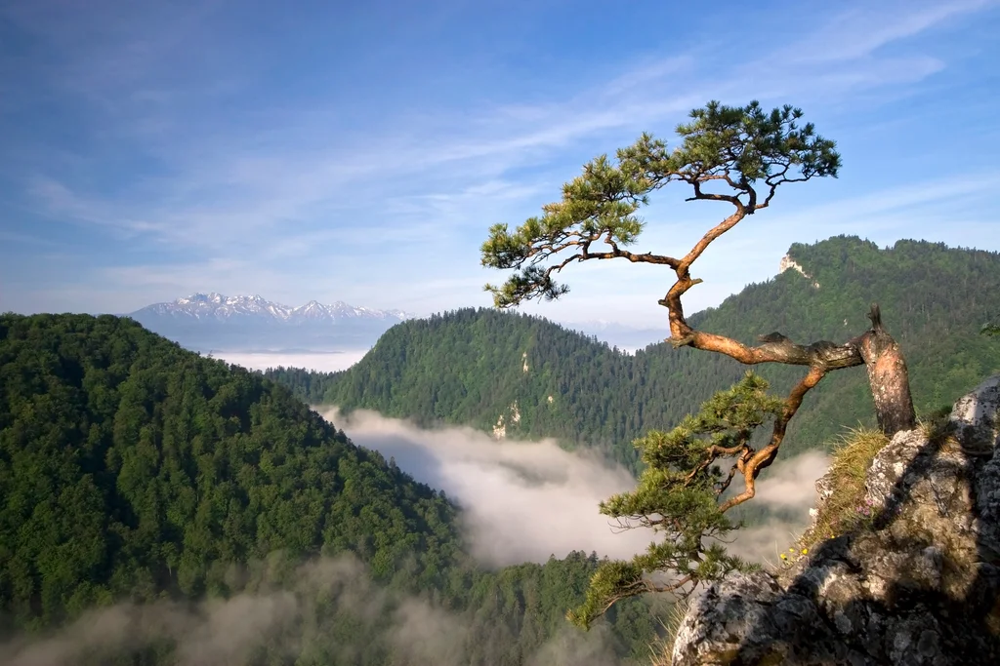
Trzy Korony i Sokolica – szlaki, widoki i praktyczny przewodnik
Trzy Korony i Sokolica to dwa szczyty, które najlepiej oddają charakter Pienin – dostępne, malownicze i pełne przyrodniczych oraz kulturowych wrażeń. Łatwo dostępne szlaki, zabezpieczone punkty widokowe i bliskość innych atrakcji czynią z nich doskonały cel jednodniowej wycieczki – także dla rodzin.
Trzy Korony i Sokolica – szlaki, widoki i praktyczny przewodnik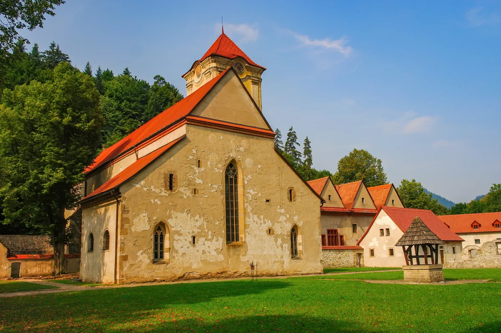
Czerwony Klasztor
Czerwony Klasztor to wyjątkowe miejsce, które łączy duchowość, historię i przyrodę. Położony na granicy państw i kultur, jest doskonałym celem spaceru, przystankiem po spływie Dunajcem lub punktem kulminacyjnym jednodniowej wycieczki po Pieninach.
Czerwony Klasztor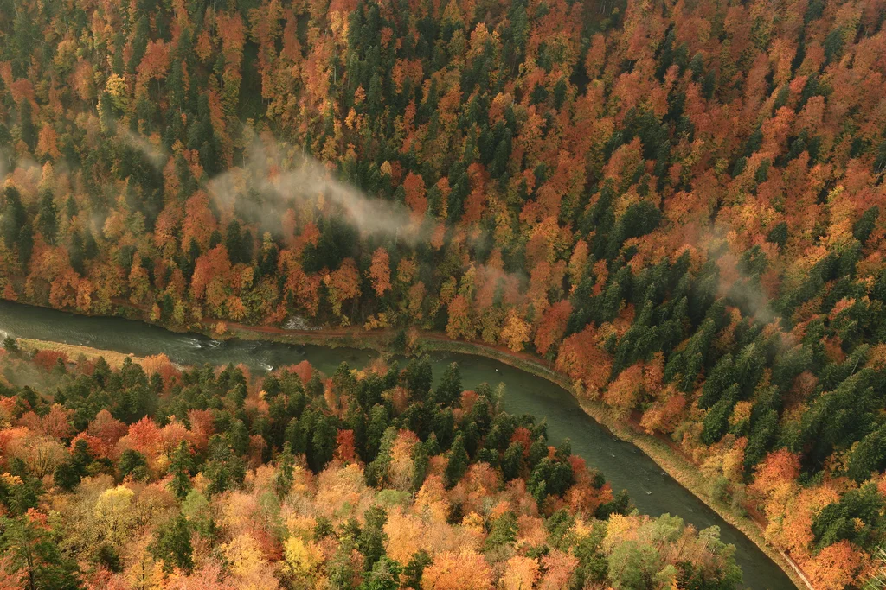
Pieniński Park Narodowy – szlaki, widoki i praktyczny przewodnik dla turystów
Pieniński Park Narodowy to miejsce, w którym każdy znajdzie coś dla siebie – od zapierających dech widoków po spokojne ścieżki nad Dunajcem. Przemyślana infrastruktura, ciekawe trasy i bliskość licznych atrakcji sprawiają, że warto tu wracać o każdej porze roku.
Pieniński Park Narodowy – szlaki, widoki i praktyczny przewodnik dla turystów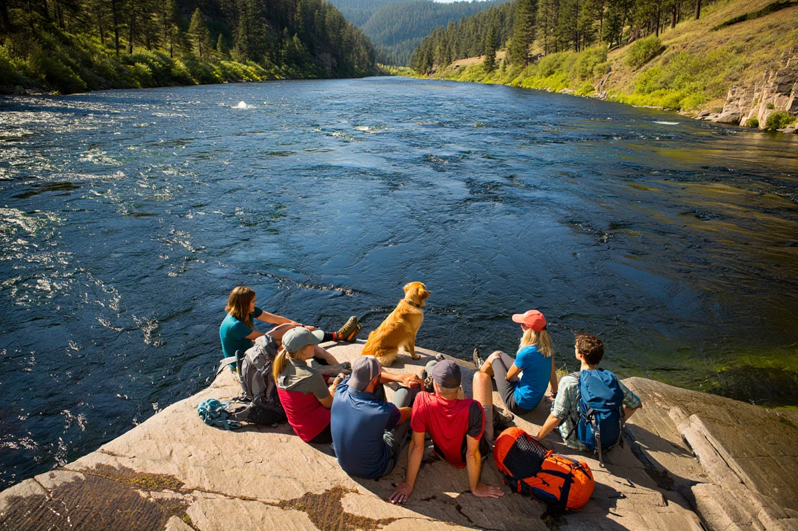
Spływ Dunajcem z psem – wyjątkowa atrakcja dla Ciebie i Twojego pupila
Spływ to atrakcja, która łączy relaks i bliskość natury, a obecność psa, który zawsze jest blisko Ciebie, może dodatkowo uatrakcyjnić całą wyprawę, czyniąc ją jeszcze bardziej wyjątkową.
Spływ Dunajcem z psem – wyjątkowa atrakcja dla Ciebie i Twojego pupilaTratwy flisackie – tradycja, która wciąż żyje
Tratwy flisackie to nie tylko atrakcja turystyczna, ale i żywa lekcja historii regionu.
Tratwy flisackie – tradycja, która wciąż żyje
Rafting Dunajec – spływ pontonem po Dunajcu
Dzięki zróżnicowanym trasom i wsparciu doświadczonych organizatorów, spływ pontonem Dunajcem jest odpowiedni zarówno dla rodzin z dziećmi, jak i grup firmowych czy osób starszych.
Rafting Dunajec – spływ pontonem po Dunajcu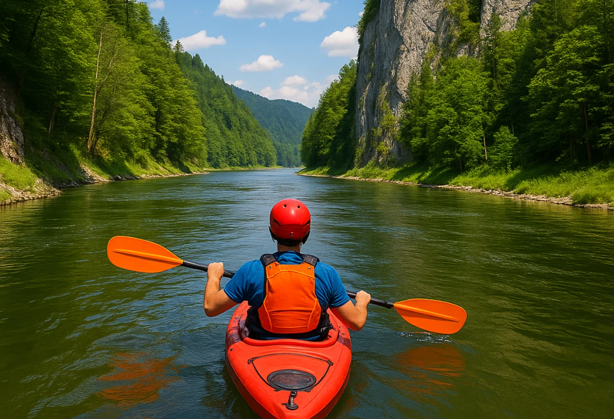
Spływ kajakowy Dunajcem
Dostępność tras o różnym stopniu trudności, profesjonalna obsługa oraz możliwość dostosowania sprzętu do indywidualnych potrzeb sprawiają, że każdy – niezależnie od doświadczenia – znajdzie coś dla siebie.
Spływ kajakowy Dunajcem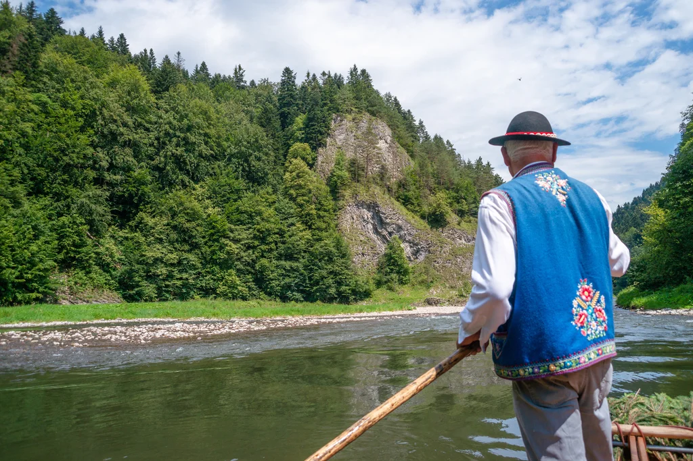
Flisacy – zawód, tradycja i historia spływu Dunajcem oczami pienińskich sterników
Flisacy pienińscy to nie tylko przewoźnicy turystów – to żywa część dziedzictwa kulturowego regionu, która łączy dawną funkcję rzemieślniczą z rolą współczesnego przewodnika i ambasadora lokalnej tradycji.
Flisacy – zawód, tradycja i historia spływu Dunajcem oczami pienińskich sterników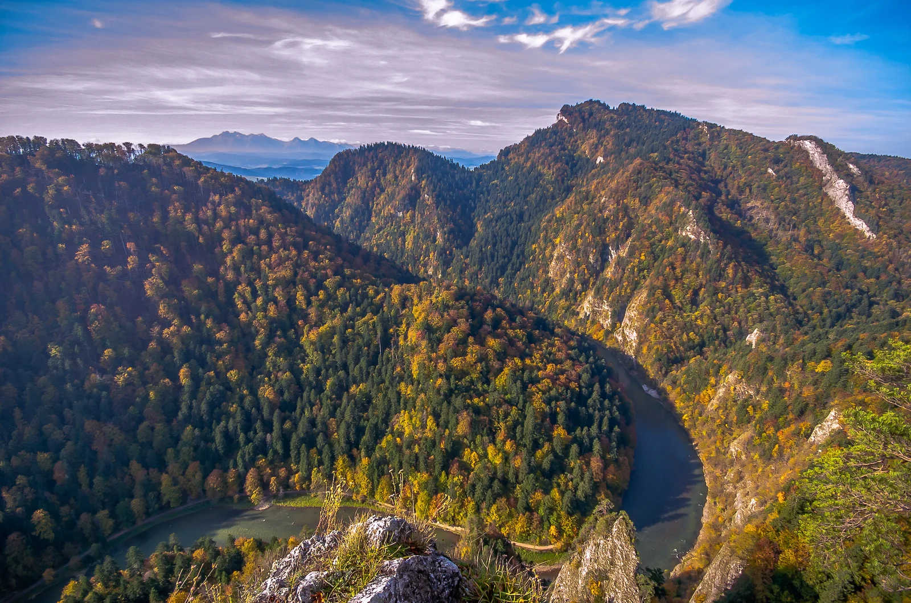
Rzeka Dunajec – przyroda, historia i atrakcje turystyczne
Rzeka Dunajec to jedno z najpiękniejszych miejsc w Polsce, które łączy przyrodę, historię i aktywny wypoczynek. Od przełomu w Pieninach po ujście do Wisły – jej bieg przecina krajobrazy, granice i kultury, a każda pora roku odkrywa jej inne oblicze.
Rzeka Dunajec – przyroda, historia i atrakcje turystyczne
Szczawnica – popularna baza wypadowa na spływ Dunajcem
Szczawnica jest świetnym miejscem na kilkudniowy pobyt połączony ze zwiedzaniem Pienińskiego Parku Narodowego
Szczawnica – popularna baza wypadowa na spływ Dunajcem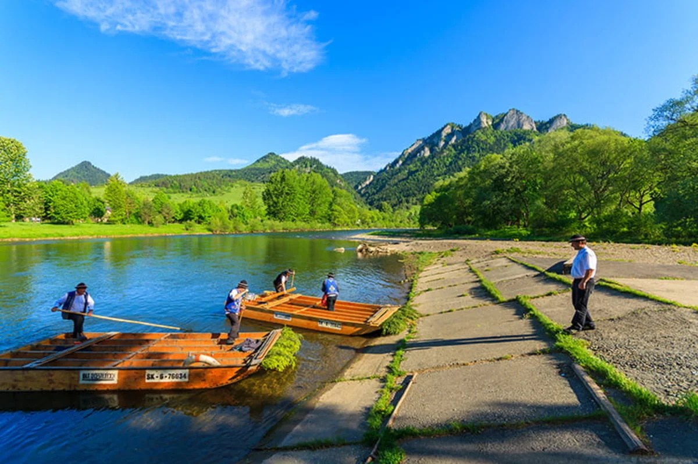
Sromowce – początek tradycji flisackiej i spływu Dunajcem
Sromowce to nie tylko historia flisactwa, ale i świetny punkt widokowy na Trzy Korony oraz miejsce startu wielu szlaków pieszych – w tym do Czerwonego Klasztoru po stronie słowackiej. Przez rzekę przerzucony jest most pieszo-rowerowy, który łączy Polskę i Słowację.
Sromowce – początek tradycji flisackiej i spływu Dunajcem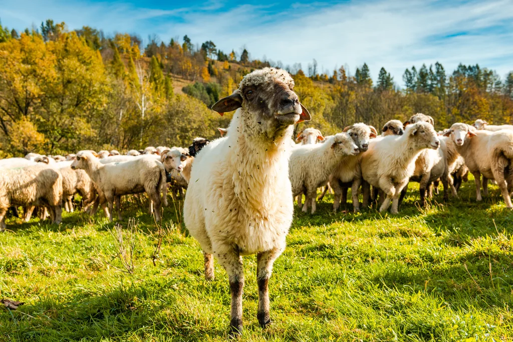
Krościenko nad Dunajcem – idealny punkt startowy i widokowy
Miejscowość leży między pasmami Pienin i Gorców, co sprawia, że jest świetnym punktem wypadowym nie tylko na wodę, ale też na górskie szlaki – w tym na Trzy Korony i Sokolicę.
Krościenko nad Dunajcem – idealny punkt startowy i widokowy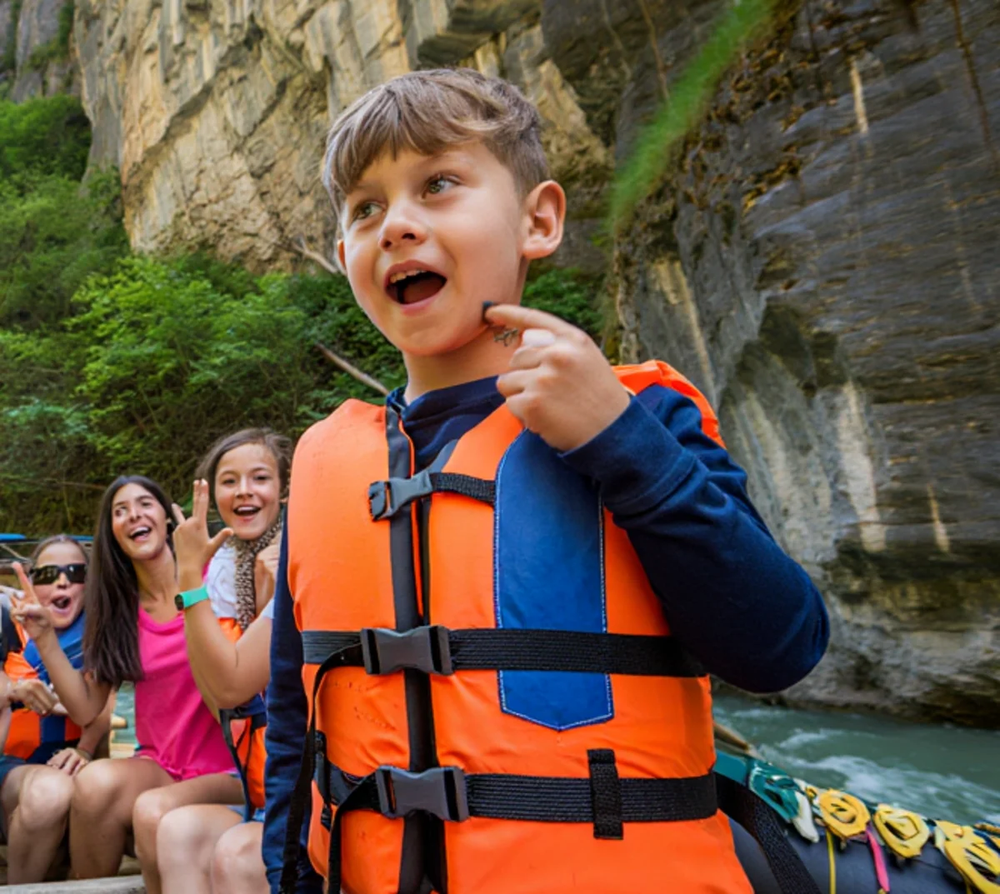
Spływ Dunajcem z dziećmi – niezapomniana przygoda dla całej rodziny!
Key practices to enhance the use of a CMS for better content management.
Spływ Dunajcem z dziećmi – niezapomniana przygoda dla całej rodziny!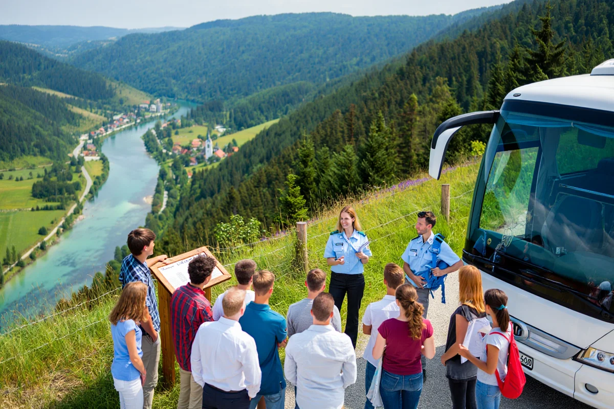
Spływ Dunajcem dla grup – idealna opcja na wyjazd integracyjny
Spływ Dunajcem dla grup to idealna opcja na organizację wyjątkowego wydarzenia – czy to wyjazdu integracyjnego, czy po prostu wspólnej wyprawy z rodziną czy przyjaciółmi.
Spływ Dunajcem dla grup – idealna opcja na wyjazd integracyjny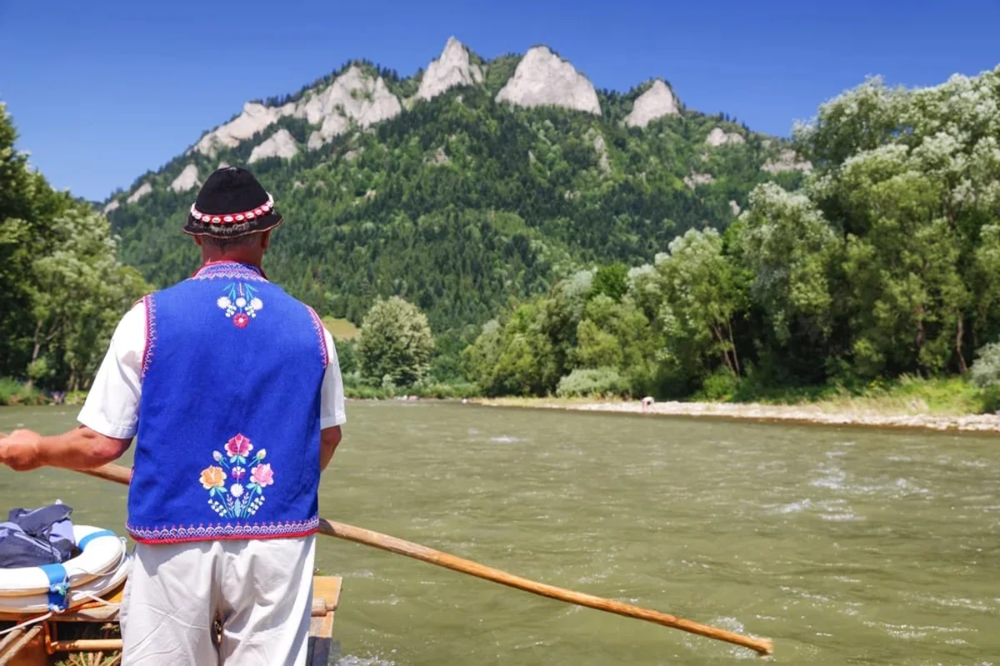
Słowacja – spokojna i malownicza strona spływu Dunajcem
Przebiegający tutaj odcinek rzeki stanowi naturalną granicę między Polską a Słowacją, a jego największą atrakcją jest oczywiście słowacki spływ Dunajcem i Czerwony Klasztor.
Słowacja – spokojna i malownicza strona spływu Dunajcem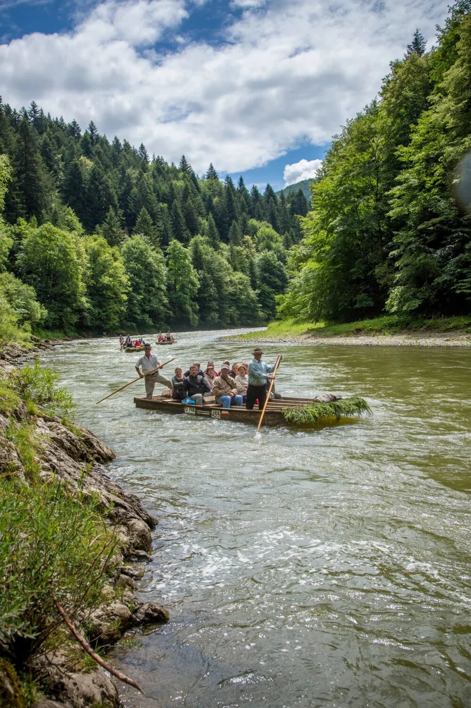
Spływ Dunajcem dla osób niepełnosprawnych – dostępna i bezpieczna atrakcja
Spływ Dunajcem to jedna z najpiękniejszych atrakcji turystycznych w Polsce, która pozwala na odkrywanie uroków Pienin i malowniczego przełomu Dunajca. Ale co, jeśli osoba z ograniczoną mobilnością chciałaby wziąć udział w tej niezapomnianej podróży?
Spływ Dunajcem dla osób niepełnosprawnych – dostępna i bezpieczna atrakcja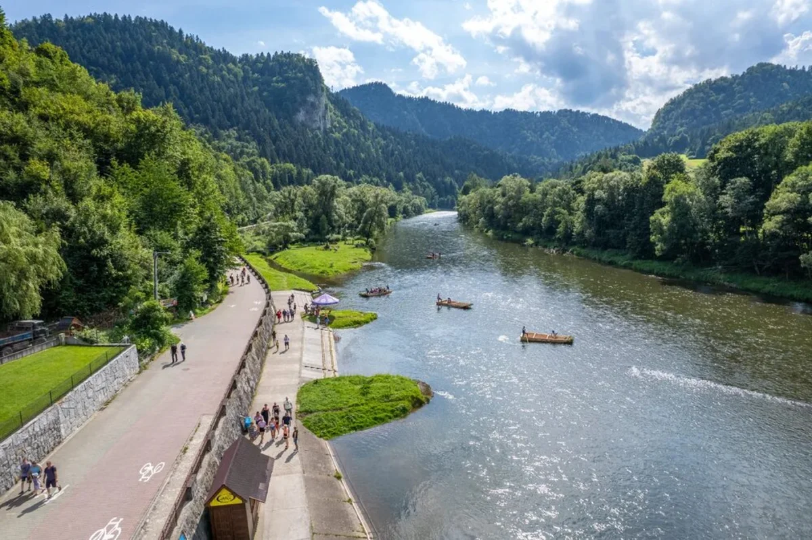
Informacje i ciekawostki o spływie Dunajcem
Informacje i ciekawostki o spływie Dunajcem to coś więcej niż tylko fakty – to wgląd w kulturę, historię i przyrodę Pienin.
Informacje i ciekawostki o spływie Dunajcem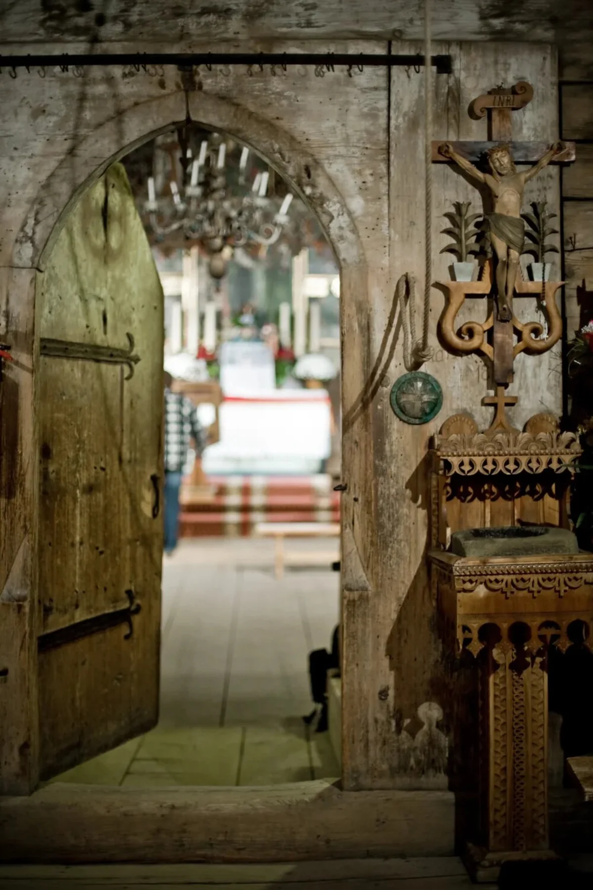
Atrakcje dodatkowe podczas wycieczki na spływ Dunajcem
Atrakcje dodatkowe podczas wycieczki na spływ Dunajcem to idealna okazja, by poznać nie tylko malowniczy przełom rzeki, ale również historyczne, przyrodnicze i kulturowe perełki regionu.
Atrakcje dodatkowe podczas wycieczki na spływ Dunajcem